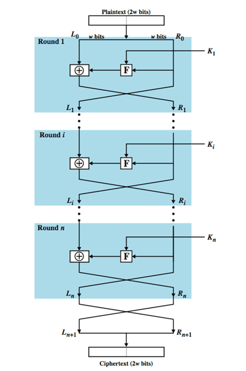

History of DES
The origins of DES go back to the early 1970s. In 1972, after concluding a study on the US government's computer security needs, the US standards body NBS (National Bureau of Standards)—now named NIST (National Institute of Standards and Technology)—identified a need for a government-wide standard for encrypting unclassified, sensitive information.
Accordingly, on 15 May 1973, after consulting with the NSA, NBS solicited proposals for a cipher that would meet rigorous design criteria. None of the submissions, however, turned out to be suitable. A second request was issued on 27 August 1974.
This time, IBM submitted a candidate which was deemed acceptable—a cipher developed during the period 1973–1974 based on an earlier algorithm, Horst Feistel's Lucifer cipher.
The team at IBM involved in cipher design and analysis included Feistel, Walter Tuchman, Don Coppersmith, Alan Konheim, Carl Meyer, Mike Matyas, Roy Adler, Edna Grossman, Bill Notz, Lynn Smith, and Bryant Tuckerman.
Description
DES is the archetypal block cipher—an algorithm that takes a fixed-length string of plaintext bits and transforms it through a series of complicated operations into another ciphertext bitstring of the same length. In the case of DES, the block size is 64 bits. DES also uses a key to customize the transformation, so that decryption can supposedly only be performed by those who know the particular key used to encrypt. The key ostensibly consists of 64 bits; however, only 56 of these are actually used by the algorithm. Eight bits are used solely for checking parity, and are thereafter discarded. Hence the effective key length is 56 bits.
The key is nominally stored or transmitted as 8 bytes, each with odd parity. According to ANSI X3.92-1981 (Now, known as ANSI INCITS 92-1981), section 3.5:
One bit in each 8-bit byte of the KEY may be utilized for error detection in key generation, distribution, and storage. Bits 8, 16,..., 64 are for use in ensuring that each byte is of odd parity.
Like other block ciphers, DES by itself is not a secure means of encryption but must instead be used in a mode of operation. FIPS-81 specifies several modes for use with DES. Further comments on the usage of DES are contained in FIPS-74.
Decryption uses the same structure as encryption but with the keys used in reverse order. (This has the advantage that the same hardware or software can be used in both directions.)
Key schedule
Figure 3 illustrates the key schedule for encryption—the algorithm which generates the subkeys. Initially, 56 bits of the key are selected from the initial 64 by Permuted Choice 1 (PC-1)—the remaining eight bits are either discarded or used as parity check bits. The 56 bits are then divided into two 28-bit halves; each half is thereafter treated separately. In successive rounds, both halves are rotated left by one or two bits (specified for each round), and then 48 subkey bits are selected by Permuted Choice 2 (PC-2)—24 bits from the left half, and 24 from the right. The rotations (denoted by "<<<" in the diagram) mean that a different set of bits is used in each subkey; each bit is used in approximately 14 out of the 16 subkeys.
The key schedule for decryption is similar—the subkeys are in reverse order compared to encryption. Apart from that change, the process is the same as for encryption. The same 28 bits are passed to all rotation boxes.
Security and cryptanalysis
Although more information has been published on the cryptanalysis of DES than any other block cipher, the most practical attack to date is still a brute force approach.
Various minor cryptanalytic properties are known, and three theoretical attacks are possible which, while having a theoretical complexity less than a brute force attack, require an unrealistic number of known or chosen plaintexts to carry out, and are not a concern in practice.
Simplified DES
Simplified DES (SDES) was designed for educational purposes only, to help students learn about modern cryptanalytic techniques. SDES has similar properties and structure as DES, but has been simplified to make it much easier to perform encryption and decryption by hand with pencil and paper. Some people feel that learning SDES gives insight into DES and other block ciphers, and insight into various cryptanalytic attacks against them.
Replacement algorithms
Concerns about security and the relatively slow operation of DES in software motivated researchers to propose a variety of alternative block cipher designs, which started to appear in the late 1980s and early 1990s: examples include RC5, Blowfish, IDEA, NewDES, SAFER, CAST5 and FEAL. Most of these designs kept the 64-bit block size of DES, and could act as a "drop-in" replacement, although they typically used a 64-bit or 128-bit key. In the Soviet Union the GOST 28147-89 algorithm was introduced, with a 64-bit block size and a 256-bit key, which was also used in Russia later.
On January 2, 1997, NIST announced that they wished to choose a successor to DES. In 2001, after an international competition, NIST selected a new cipher, the Advanced Encryption Standard (AES), as a replacement. The algorithm which was selected as the AES was submitted by its designers under the name Rijndael. Other finalists in the NIST AES competition included RC6, Serpent, MARS, and Twofish.